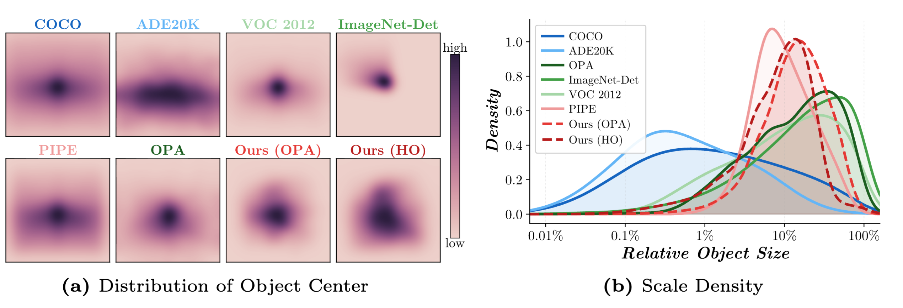
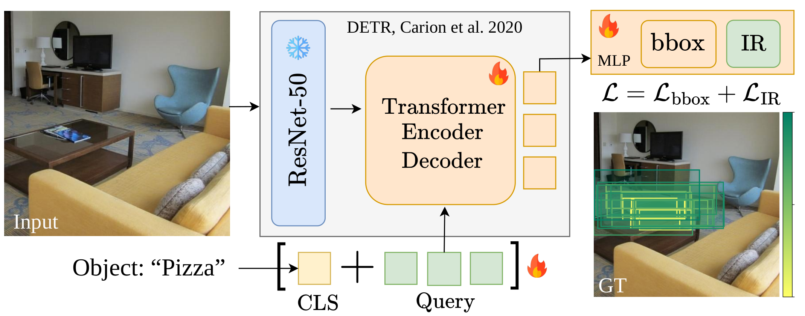

We evaluate the annotations via inpainting conditioned on input bounding boxes using ImgEdit-Judge (Qwen2.5-VL, scale 1–5) across three axes: Prompt Compliance (PC), Visual Naturalness (VN), and Physical & Detail Coherence (PDC).

We propose a method to learn explicit, class-conditioned spatial priors for object placement in natural scenes by distilling the implicit placement knowledge encoded in text-conditioned diffusion models. Prior work relies either on manually annotated data, which is inherently limited in scale, or on inpainting-based object-removal pipelines, whose artifacts promote shortcut learning. To address these limitations, we introduce a fully automated and scalable framework that evaluates dense object placements on high-quality real backgrounds using a diffusion-based inpainting pipeline. With this pipeline, we construct HiddenObjects, a large-scale dataset comprising 27M placement annotations, evaluated across 27k distinct scenes, with ranked bounding box insertions for different images and object categories. Experimental results show that our spatial priors outperform sparse human annotations on a downstream image editing task (3.90 vs. 2.68 VLM-Judge), and significantly surpass existing placement baselines and zero-shot Vision-Language Models for object placement. Furthermore, we distill these priors into a lightweight model for fast and practical inference (230,000× faster). Our dataset and code will be made publicly available upon release.
27M
Placement annotations
27k
Real-world background scenes from Places365
50
Foreground Object categories from COCO
3.77ms
Inference after distillation
3.90
vs. 2.68 sparse human annotations via ImgEdit-Judge
We construct HiddenObjects by pairing 27k background images from 126 scene categories of Places365 with 50 COCO foreground categories across 10 macro-classes (food, furniture, animal, vehicle, …). Each scene–category pair is annotated with 1,004 ranked bounding box proposals, yielding 27M placement annotations in total.
| Dataset | # Boxes | + / inst | − / inst | Real Img | Dense | Scalable | Clean BG |
|---|---|---|---|---|---|---|---|
| DreamEditBench | 220 | 1 | 0 | ✓ | ✗ | ✗ | ✓ |
| MureCom | 640 | 1 | 0 | ✓ | ✗ | ✗ | ✓ |
| OPA | 0.07M | 1.9 | 3.8 | ✓ | ✗ | ✗ | ✓ |
| OPA-ext | 0.15M | 2.2 | 4.3 | ✓ | ✗ | ✗ | ✓ |
| PIPE | 0.89M | 1 | 0 | ✗ | ✗ | ✓ | ✗ |
| SAM-FB | 3M | 1 | 0 | ✗ | ✗ | ✓ | ✗ |
| HiddenObjects | 27M | 77.7 | 926.3 | ✓ | ✓ | ✓ | ✓ |
Hover over any image to reveal its placement annotations. Green = accepted · Red = rejected.

① Inpainter
Qwen-Image + ControlNet synthesises class-consistent object insertions at each bounding box in a sliding-window grid. ControlNet conditioning enforces scene geometry and refuses physically impossible placements.
② Verifier
Grounded-SAM-2 detects whether the target object was successfully inpainted in the proposed region. Low-confidence detections, wrong categories, and object replacements are discarded.
③ Ranker
ImageReward assigns a human-preference score to each verified insertion. The ranked scores define the final spatial prior distribution over all valid locations.

Example spatial prior creation. Our pipeline performs an exhaustive sliding-window search on a kitchen scene for pizza insertions.

Composite Overlay of Inpaintings. Multiple valid inpaintings are aggregated into a single composite scene. Accepted objects are segmented and overlaid on the source background. Insertions are ordered by preference ranking so the highest ranked object remains unoccluded at the top of the stack.
We evaluate the annotations via inpainting conditioned on input bounding boxes using ImgEdit-Judge (Qwen2.5-VL, scale 1–5) across three axes: Prompt Compliance (PC), Visual Naturalness (VN), and Physical & Detail Coherence (PDC).
| Method | Test Set | PC ↑ | VN ↑ | PDC ↑ | Avg ↑ |
|---|---|---|---|---|---|
| Raw Background | HiddenObjects | 1.04 | 1.03 | 1.03 | 1.04 |
| Full Mask | HiddenObjects | 1.62 | 1.60 | 1.59 | 1.60 |
| Random BBox | HiddenObjects | 2.73 | 2.62 | 2.62 | 2.65 |
| Ours (Pipeline) | HiddenObjects | 3.83 | 3.63 | 3.63 | 3.69 |
| Raw Background | OPA | 1.00 | 1.00 | 1.00 | 1.00 |
| Full Mask | OPA | 1.66 | 1.66 | 1.66 | 1.66 |
| Human Annotation | OPA | 2.72 | 2.66 | 2.66 | 2.68 |
| Random BBox | OPA | 2.97 | 2.84 | 2.84 | 2.89 |
| Ours (Pipeline) | OPA | 4.05 | 3.83 | 3.83 | 3.90 |
Our pipeline outperforms all baselines including human annotations (3.90 vs. 2.68). Manual placement labels are inherently ambiguous — comparable in quality to random bounding box proposals.

Qualitative comparison of annotation quality. Our pipeline produces spatially coherent placements that respect scene geometry, while baselines often place objects in implausible locations or fail to produce realistic composites.
We distill our spatial priors into a lightweight transformer that predicts ranked bounding boxes directly from a background image and a text category. The distilled model runs at 3.77 ms/image, a 230,000× speedup over the full pipeline, while preserving the quality of the learned priors.

Distilled model architecture. A transformer encoder–decoder processes a background image and a CLIP text embedding for the target category, and directly predicts a set of ranked bounding boxes as the spatial prior.
We benchmark the distilled model against zero-shot VLMs and dedicated placement models on the HiddenObjects test set.
| Method | Train Set | mAP (%) | IoU50@1 (%) | IoU@1 (%) | IoU50@5 (%) | IoU@5 (%) |
|---|---|---|---|---|---|---|
| Zero-shot Vision-Language Models | ||||||
| Qwen2.5-VL-72B | — | 1.3 | 7.9 | 14.0 | 12.7 | 18.8 |
| Qwen2.5-VL-7B | — | 1.4 | 8.6 | 13.9 | 10.1 | 16.5 |
| InternVL3-8B | — | 0.3 | 3.3 | 11.2 | 9.2 | 18.7 |
| LLaVA-OV-7B | — | 1.0 | 11.7 | 20.9 | 16.3 | 24.7 |
| Dedicated Object Placement Models | ||||||
| BootPlace | Cityscapes | 0.1 | 0.9 | 6.0 | 0.9 | 6.0 |
| TerseNet | OPA | 1.4 | 20.9 | 29.5 | 20.9 | 29.5 |
| GracoNet | OPA | 2.1 | 23.7 | 35.9 | 23.7 | 35.9 |
| PlaceNet | OPA | 2.9 | 43.5 | 42.4 | 43.5 | 42.4 |
| Ours | OPA | 28.0 | 36.4 | 33.0 | 51.9 | 57.6 |
| Ours | HiddenObjects | 56.6 | 62.9 | 55.2 | 79.1 | 67.7 |
Our distilled model outperforms all baselines by a large margin (56.6% vs. 2.9% mAP), demonstrating that dense reward-weighted spatial priors are essential for learning robust placement distributions.
@inproceedings{schouten2026hiddenobjects,
title = {HiddenObjects: Scalable Diffusion-Distilled Spatial Priors for Object Placement},
author = {Schouten, Marco and Siglidis, Ioannis and Belongie, Serge and Papadopoulos, Dim P.},
booktitle = {arXiv},
year = {2026}
}